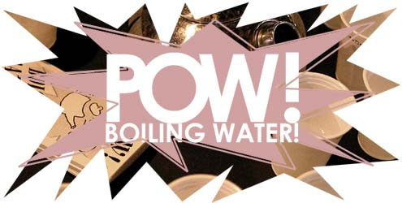

 |
|||
Let's be honest about one thing. These days in this city it is impossible to use public transportation without reaching your location accompanied by at least one new flier, brochure or advertisement in your pocket. If you're waiting for a bus, you are easy prey. You're not going anywhere until the bus comes. There are only so many non-verbal stances that signify preoccupation. If you're quickly walking through the tunnel of the el, you may be faced with the option of accepting a flier or ramming into a stranger's outstretched arm, and you will invariably decide to take the flier. Public transportation is dirty enough, even without touching strangers' arms with your midsection. And the arms are bold. They target you, they get in your way. Your handbag becomes a garbage bag, a collection of little pieces of paper from shows you never go to, “free publications” you never read. The “good causes” become arbitrary by the time they reach your pocket; there's just too many of them in there, having a self-righteous little dialogue in your jeans. Anti-war protests are mingling with reunion benefit shows, while rape crisis centers chat it up with drink special menus. There's a party in your pants. Or maybe you don't take the fliers. Maybe you've perfected a scowl so masterfully it has rendered you thoroughly unapproachable. Or maybe your gait is rough and tough and mean. There's a system to these things. It's important to have your system worked out before you leave the house, to figure out which customized method works best for you. There are some things you will always pick up. Lemonade stands are my weakness: I will turn the car around for a homemade sign and a Dixie cup. I don't even like lemonade. People will pick up anything that doesn't appear to be paper information. Food or drinks work well, especially if they're free. Everyone likes free samples. Hang out in the back corner of your grocery store on a Sunday morning if you want to test this out. I've seen these sample stands have better turnouts then social functions. People go back for seconds; they send their kids to sneak more. Here's the equation: Free sample + Brochure = A Movement I founded an organization with a brochure and a free sample. The key is to fuse active sampling into your campaign. Does the content of these things really matter? Some people will always stop; some people wouldn't stop if you were passing out world domination on a stick. I founded POW! BOILING WATER!, an organization dedicated to convincing bottled water drinkers to boil out water impurities themselves, in a pan at home. “Free samples!” says the homemade sign. “This water has been boiled!” This sort of sign gives my stand the appeal that potentially attracts madmen. I have set up near a water purification plant. When I'm asked, “What's all this about?” it is important to field questions with questions. “Have you ever thought about where bottled water comes from?” “Did you know there are no restrictions placed on bottled water companies' marketing?” “Did you know it is possible to filter out impurities in your very own home?” “Why don't you try a free sample?” All the signifiers are there. The table, the flier, the nervous girl with the long coat. The commuters know exactly how to deal with this kind of bullshit. “Nothankyou,” the men say quickly with their trench coats and briefcases, no eye contact, no big deal. The women are more deliberate. They have a bone to pick with these sorts of enterprises. They will not be made easy prey. They look skeptically at my sign, ridiculously at my cups of water.
|
|||